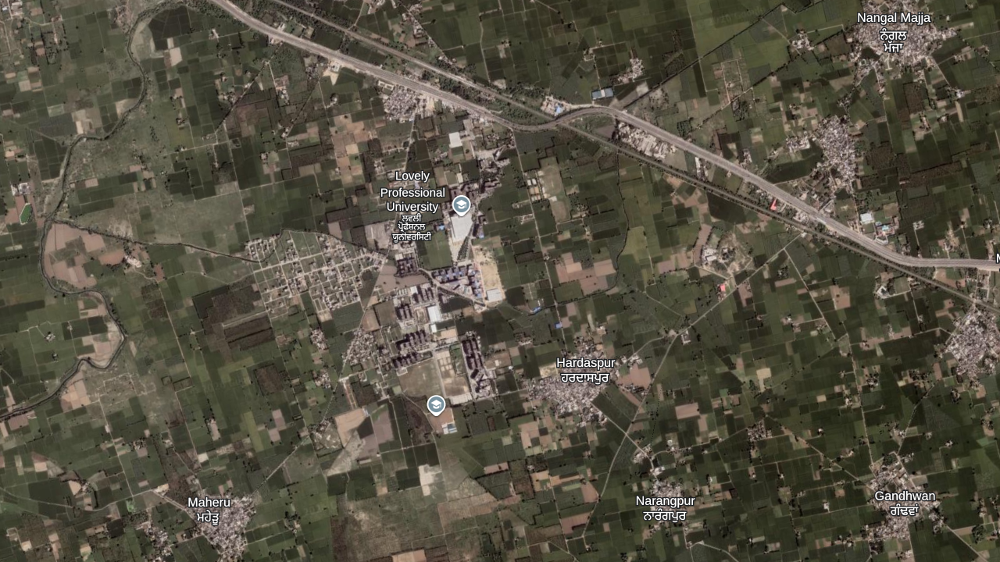
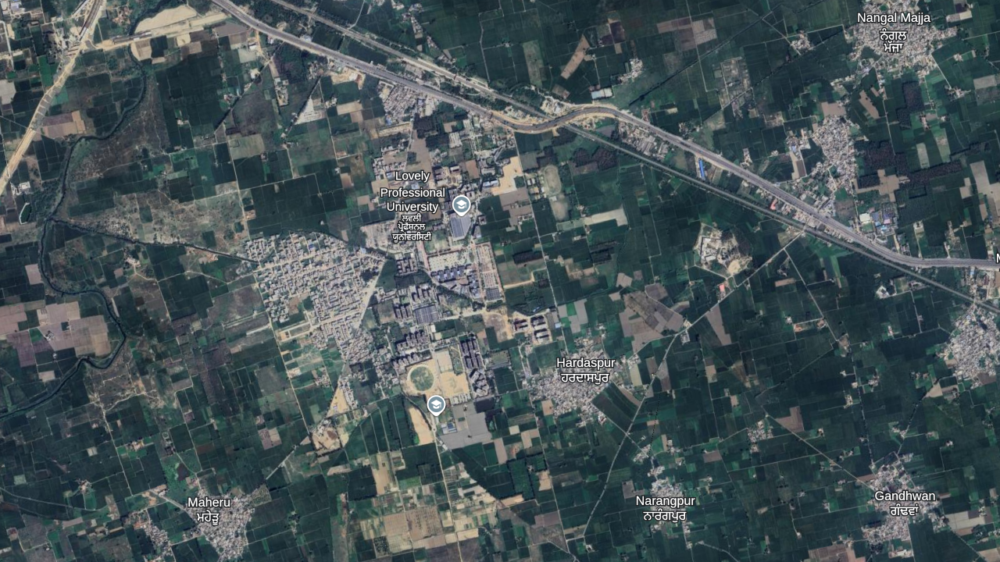

Documenting regional development and ecological impact.


Satellite comparisons over an 8-year period illustrate rapid institutional and secondary commercial expansion. The university's built footprint has significantly densified and expanded southward. Concurrently, neighboring rural settlements show marked outward growth, highlighting the conversion of surrounding agricultural plots to support the localized economic ecosystem.